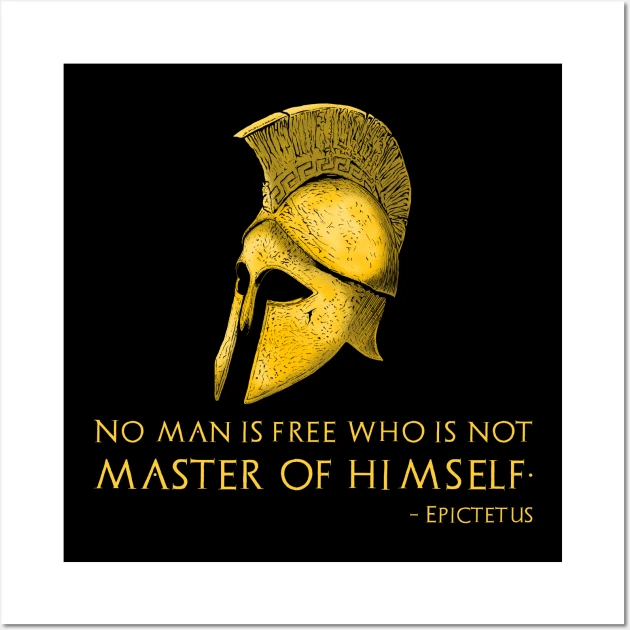

Overview
Purpose
Daily mindfulness exercises with Stoic philosophy, offering tools for resilience, inner calm, and intentional living. The site aims to help users manage stress and gain clarity through Stoic-inspired mindfulness practices.
Audience
The primary audience is individuals interested in mindfulness, personal growth, or Stoic philosophy, looking for practical daily practices to improve mental well-being and handle life’s challenges with equanimity.
Branding
Website Logo
Style Guide
Color Palette
| Primary | Secondary | Accent 1 | Accent 2 |
|---|---|---|---|
Typography
Heading Font: Georgia
Paragraph Font: Arial
Normal paragraph example
This site merges the ancient wisdom of Stoic teachings with contemporary mindfulness practices to help users build a resilient mindset.
Colored paragraph example
Explore practical exercises that promote daily mindfulness and inner peace, grounded in Stoic principles.
Navigation
Site Map
Content
Home page
This page will introduce the site, explaining the benefits of combining Stoic philosophy with mindfulness practices. It will guide users to explore daily exercises and Stoic teachings.
Images for the Home page
Mindfulness Practices
This page will provide short, guided mindfulness exercises tailored to incorporate Stoic principles for daily practice.
Images for the Page 2
Stoic Insights
This page will contain insights from Stoic philosophy, offering quotes and reflections designed to complement the mindfulness practices.
Images for the Page 3

Wireframes
Create three wireframes for your site. One for each page and list them here
Home
[Any additional details about home that the wireframe does not make clear]
Mindfulness Practices Wireframe
[Any additional details about page 2 that the wireframe does not make clear]
Stoic Insights
[Any additional details about page 3 that the wireframe does not make clear]